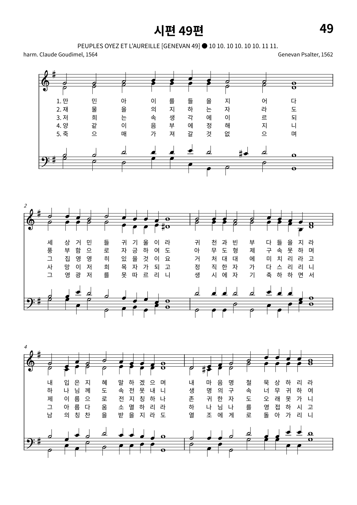
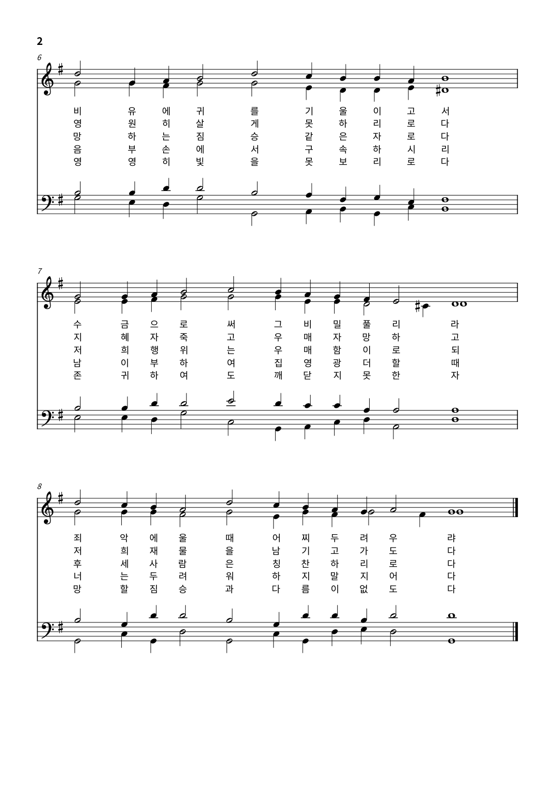

시편 49편
PEUPLES OYEZ ET L’AUREILLE [GENEVAN 49] · 10 10. 10 10. 10 10. 11 11.
곡조: Genevan Psalter, 1562 · 화성: Claude Goudimel, 1564 · 가사: 개역한글판 시편 49편 편역(AI 초벌 편역판 · 신학 감수 전) · 5절
악보 PDF MusicXML(출력용) MusicXML(반주용, 전주·반복 포함) 개역한글 시편 49편 읽기
악보


가사
1절
만민아 이를 들을지어다
세상 거민들 귀 기울이라
귀천과 빈부 다 들을지라
내 입은 지혜 말하겠으며
내 마음 명철 묵상하리라
비유에 귀를 기울이고서
수금으로써 그 비밀 풀리라
죄악 에울 때 어찌 두려우랴
만민아 이를 들을지어다
세상 거민들 귀 기울이라
귀천과 빈부 다 들을지라
내 입은 지혜 말하겠으며
내 마음 명철 묵상하리라
비유에 귀를 기울이고서
수금으로써 그 비밀 풀리라
죄악 에울 때 어찌 두려우랴
2절
재물을 의지하는 자라도
풍부함으로 자긍하여도
아무도 형제 구속 못하며
하나님께도 속전 못 내니
생명의 구속 너무 귀하여
영원히 살게 못 하리로다
지혜자 죽고 우매자 망하고
저희 재물을 남기고 가도다
재물을 의지하는 자라도
풍부함으로 자긍하여도
아무도 형제 구속 못하며
하나님께도 속전 못 내니
생명의 구속 너무 귀하여
영원히 살게 못 하리로다
지혜자 죽고 우매자 망하고
저희 재물을 남기고 가도다
3절
저희는 속생각에 이르되
그 집 영영히 있을 것이요
거처 대대에 미치리라고
제 이름으로 전지 칭하나
존귀한 자도 오래 못 가니
망하는 짐승 같은 자로다
저희 행위는 우매함이로되
후세 사람은 칭찬하리로다
저희는 속생각에 이르되
그 집 영영히 있을 것이요
거처 대대에 미치리라고
제 이름으로 전지 칭하나
존귀한 자도 오래 못 가니
망하는 짐승 같은 자로다
저희 행위는 우매함이로되
후세 사람은 칭찬하리로다
4절
양 같이 음부에 정해지니
사망이 저희 목자가 되고
정직한 자가 다스리리니
그 아름다움 소멸하리라
하나님 나를 영접하시고
음부 손에서 구속하시리
남이 부하여 집 영광 더할 때
너는 두려워 하지 말지어다
양 같이 음부에 정해지니
사망이 저희 목자가 되고
정직한 자가 다스리리니
그 아름다움 소멸하리라
하나님 나를 영접하시고
음부 손에서 구속하시리
남이 부하여 집 영광 더할 때
너는 두려워 하지 말지어다
5절 (시편 1절)
죽으매 가져갈 것 없으며
그 영광 저를 못 따르리니
생시에 자기 축하하면서
남의 칭찬을 받을지라도
열조에게로 돌아가리니
영영히 빛을 못 보리로다
존귀하여도 깨닫지 못한 자
망할 짐승과 다름이 없도다
죽으매 가져갈 것 없으며
그 영광 저를 못 따르리니
생시에 자기 축하하면서
남의 칭찬을 받을지라도
열조에게로 돌아가리니
영영히 빛을 못 보리로다
존귀하여도 깨닫지 못한 자
망할 짐승과 다름이 없도다